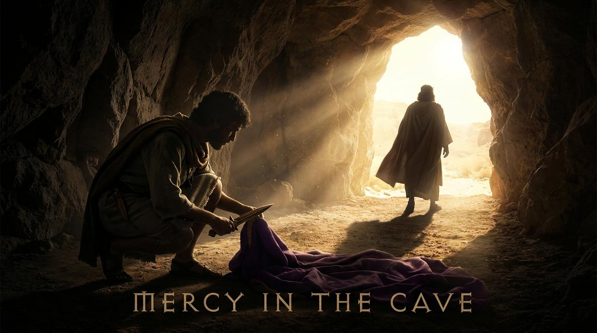

掃羅追趕非利士人回來...大衛和跟隨他的人正藏在洞裡的深處...大衛就起來，悄悄地割下掃羅外袍的衣襟。隨後大衛心中責備自己...我乃是耶和華的受膏者，我在耶和華面前萬不敢伸手害他。
大衛拒絕殺掃羅，不是因為掃羅的品格值得尊重，而是出於對「神的主權與揀選」的絕對敬畏。
當環境看似完美契合我們的渴望，甚至連旁人都引用聖經來支持我們時，我們如何分辨那是神的引導，還是撒但的試探？
解析：真正的神意絕不會違背神的屬性。分辨的關鍵在於：這條路是否需要我妥協敬畏神的底線？
「願耶和華在你我中間判斷是非，在你身上為我伸冤，我卻不親手加害於你...古人有句俗語說：『惡事出於惡人。』我卻不親手加害於你。」
大衛在此詞的使用上，表明他主動放棄了「自己作法官」的權利，將終極的審判權完全移交給耶和華。
在遭受不白之冤時，我們為何總想「自己討回公道」？
解析：我們想自己復仇，是因為我們不相信神會公正處理。交給神審判意味著承認：「我不是宇宙的中心，唯有神能做出最公義的裁決。」
掃羅說：「我兒大衛，這是你的聲音嗎？」就放聲大哭...「你比我公義；因為你以善待我，我卻以惡待你...我也知道你必要作王。」
掃羅親口承認大衛用「善」回應了他的「惡」。這個字強調了行動上的恩慈與高尚。
面對逼迫我們的人，用「善」去回應真的有效嗎？
解析：用善回應惡，目的不是為了「操控」對方改變，而是為了保守自己的心不被仇恨吞噬，並見證神的屬性。
弟兄姊妹們，平安。今天我們所要看的經文，發生在隱基底的黑暗洞穴中。這是一個關於權力、復仇與信仰底線的故事。在人生的某些時刻，我們都會走進這樣一個「洞穴」，在那裡，我們最深的渴望與一個看似完美的機會相遇。但在那黑暗中，我們面臨著一個極大的考驗：這到底是神為我們開的路，還是試探偽裝成了上帝的應許？
在撒母耳記上24:1-7中，大衛正處於人生的最低谷。他被掃羅王無故追殺，像一隻獵物般躲藏在隱基底的曠野。就在這時，掃羅竟然獨自走進了大衛藏身的洞穴裡去大解。大衛的跟隨者興奮地說：「時候到了！這就是神應許把仇敵交在你手裡的時刻！」
大衛明白，陶恕曾說：「一個真正認識神的人，絕不會用違背神性情的方式來成就神的旨意。」奪取王位固然是神的應許，但用謀殺神所膏立之君王的方式來成就，這絕對不是神的方法，這是撒但的試探。
大衛對掃羅說了一句成為我們今天金句的宣告：「願耶和華在你我中間判斷是非，在你身上為我伸冤，我卻不親手加害於你。」
正如提摩太·凱勒所說：「如果你不相信有一位會施行審判的上帝，你就會自己去扮演上帝，用報復來填補這個空缺。」大衛放棄了手中的刀，把案件移交給了宇宙最高的法庭。交給神審判，意味著我們承認自己的有限。
掃羅承認說：「你比我公義；因為你以善待我，我卻以惡待你。」大衛用他敬畏神的「善」，狠狠擊碎了掃羅心中的「惡」。
盧雲牧師提醒我們：「真正的饒恕，是放棄我們對過去所有受傷的索賠權。」大衛放棄了索賠，他用恩慈回應了追殺。當我們選擇以善勝惡時，我們是在宣告，這個世界除了仇恨與報復的法則之外，還有一個更高的法則，那就是天國的法則。
「真正的饒恕是無條件的，拒絕報復，但不代表放棄對公義的追求；我們饒恕，是因為神已經在基督裡饒恕了我們。」
「當基督呼召一個人時，祂是吩咐他來死。這死可能是殉道，也可能是每天將老我與私慾釘在十字架上。」
「上帝的國度就是上帝的旨意得以成就的範圍。當我們放下自己的掌控權，我們就進入了這個國度。」
「在這個充滿捷徑與速成法的世界裡，跟隨耶穌是一場『同一個方向的長期順服』。」
「人心的本質是一座不斷製造偶像的工廠，我們總是試圖用自己的方法來取代上帝的完美計畫。」
「上帝的旨意永遠不會將你帶到上帝的恩典無法保守你的地方；即使在最暗的洞穴，祂的眼目依然看顧。」
網路資料可能出錯，請小心查證、謹慎使用。